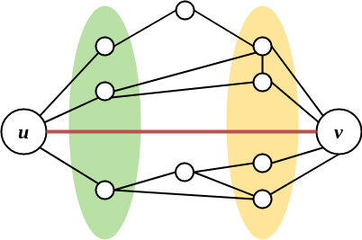

AR - Lesson 07
Indice
Fin ora abbiamo analizzato le reti dal punto di vista statistico, disinteressandoci delle caratteristiche dei singoli nodi e soffermandoci su ciò che mediamente accadeva. …
1 Tipi di legami
1.1 Esperimento di Granovetter
Nel 1960, il sociologo Mark Granovetter prosope il seguente esperimento nella sua tesi di dottorato:
intervistò una serie di persone che di recente avevano cambiato lavoro, facendo domande poste a capire in che modo erano venuti a conoscenza della nuova opportunità lavorativa.
Come ci si può aspettare la gran parte delle persone erano venuti a conoscenza dell'opportunità da lavoro tramite passaparola.
Ciò che invece era meno atteso, è che un gran numero di volte l'informazione arrivò da gente che si conosceva superficialmente.
Questo fu sorprendente perché ci si aspetta che gli amici più stretti siano quelli più interessati ad aiutarsi nel momento del bisogno.
Una risposta al fenomeno proposta da Granovetter fu che le persone a noi strette in realtà tendono ad avere le stesse nostre informazioni.
Infatti è normale che se frequentino più o meno gli stessi posti e persone di un amico stretto.
Oppure, se ho una relazione stretta con una persona è perché ci ho parlato molto nel tempo, e quindi tutte le informazioni importanti che tale persona poteva darmi
me le avrà già date in passato.
Contrariamente, una persona che conosco poco probabilmente frequenterà altri posti e persone, e quindi avrà accesso ad altre fonti di informazioni che provengono
al di fuori della mia comunità.
1.2 Bridges e Local Bridges
Come si può intuire dall'esperimento di Granovetter i contatti che più sono rilevanti nella diffusione di informazioni in una rete sono quei contatti che collegano due comunità differenti.
Sulla base di questo si può definire il concetto di bridge edge, ovvero tutti quegli archi la cui rimozione disconnette la rete.
Ovviamente i bridge edges sono archi cruciali per l'accesso alle informazioni, in quanto senza di essi una informazione non potrebbe uscire dalla sua componente.
In una rete sociale reale (e artificiale) è davvero molto poco probabile che esistano bridge edges, anche perché sappiamo già che le reti sociali presentano delle componenti giganti con buona probabilità. Rilassiamo quindi la totale disconnessione dovuta alla rimozione di tali archi, e definiamo il concetto di local bridge. Formalmente un arco \((u,v)\) è detto local bridge se \(u\) e \(v\) non hanno altri amici in comuni, ovvero se \(N(u) \cup N(v) \equiv \emptyset\).

Figura 1: In rosso il local bridge
Possiamo vedere i local bridge come archi la cui rimozione aumenta la distanza tra le due estremita di almeno 2.
1.3 Strong & Weak Ties
L'esperimento di Granovetter mostra che le informazioni sono veicolate tramite le conoscenze più deboli, proprio perché permettono di accingere ad altre fonti di informazioni.
Possiamo quindi definire un modello di rete in cui gli archi sono partizzionati tra archi forti (strong ties) e archi deboli (weak ties), che appunto rappresentano
i tipi di legami che le persone possono avere.
Certamente in un contesto reale esiste un largo range di tipi di amicizie e conoscenze che ci possono essere tra due individui, però per semplicità cataloghiamo
i tipi di conoscenze solo nelle due categorie strong e weak.
Più formalmente definiamo questo modello con un grafo \(G=(V,S\cup W)\), dove \(S\) è l'insieme degli strong ties e \(W\) è quello dei weak ties. Importante specificare che i due insiemi sono disgiunti, infatti una persona non può essere sia amica stretta che amica superficiale di un'altra (a meno che non sia una persona falsa, ma questo è un altro discorso…). \[ S \cup W \equiv \emptyset \]
1.4 The Strong Triadic Closure Property
Consideriamo lo stato di una rete sociali in un dato istante, sarebbe interessante sapere come si evolve nel tempo e quali sono i meccanismi che portano alla creazione
o alla rottura di nuovi archi.
Un principio abbastanza intuitivo è il seguente:
se due nodi hanno un amico stretto in comune, allora è molto probabile che in futuro entrino in contatto e stabiliscano anchessi un rapporto di amicizia stretta.
Ciò che si genera quindi tra i tre nodi in questione è la cosidetta chiusura triadica.
Pensando la chiusura triadica in termini di strong e weak ties possiamo definirla secondo la seguente regola
Sia il nodo \(a\) e due suoi vicini \(b\) e \(c\), allora l'arco \((b,c)\) probabilmente si creerà se \((a,b),(a,c) \in S\), ovvero se sono strong ties.
Diremo che quindi il nodo \(u\) rispetta la Strong Triadic Closure Property (STCP in breve) se
\[
\forall (u,v), (u,w) \in S \left[ (v,w) \in S \cup W \right]
\]
Infine diciamo che \(G\) soddisfa la STCP se tutti i suoi nodi la soddisfano.
Se si osserva bene, quando una rete soddisfa la STCP essa si stabilizza secondo la regola precedentemente descritta, ovvero in futuro non si genereranno più altri archi.
1.5 STCP e Local Bridges
THM
Sia una rete \(G=(V,S\cup W)\), un nodo \(u \in V\) che soddisfa la STCP e due suoi vicini \(x,y\) tali che \((u,x) \in S\) e \((u,y)\) è un local bridge (ovvero \(N(u) \cup N(y) \equiv \emptyset\) )
allora certamente \((u,y) \in W\) (è un weak tie).
Proof
Se per assurdo \((u,y) \in S\).
Dato che \(u\) soddisfa la STCP allora deve essere vero che esiste l'arco \((x,y)\), e quindi \(x \in N(y)\).
Ma poiché \(N(u) \cup N(y) \equiv \emptyset\) e \(x \in N(u)\), allora deve essere vero che \(x \not\in N(y)\) (assurdo)
\(\implies (u,y) \in W\) \(\square\).
[DA FINIRE]